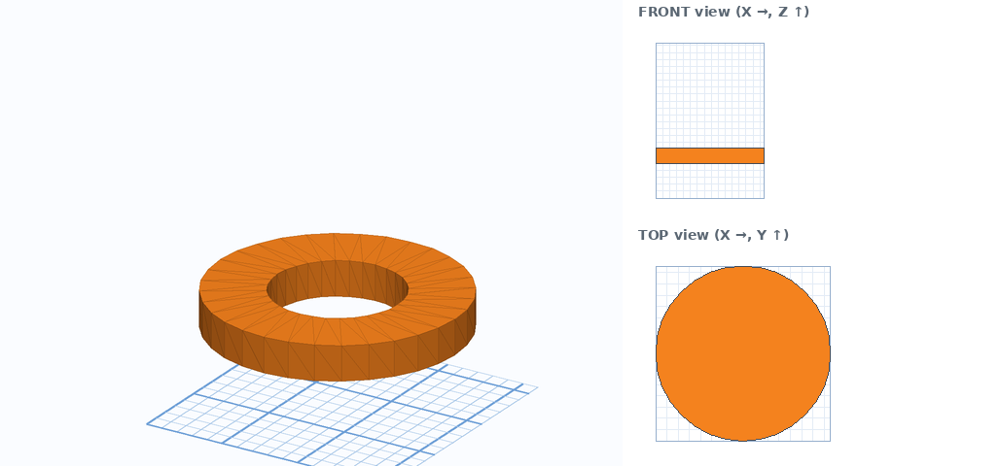
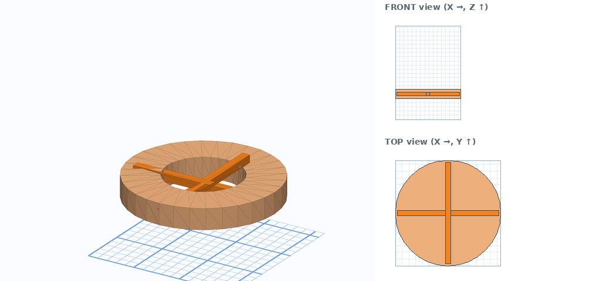
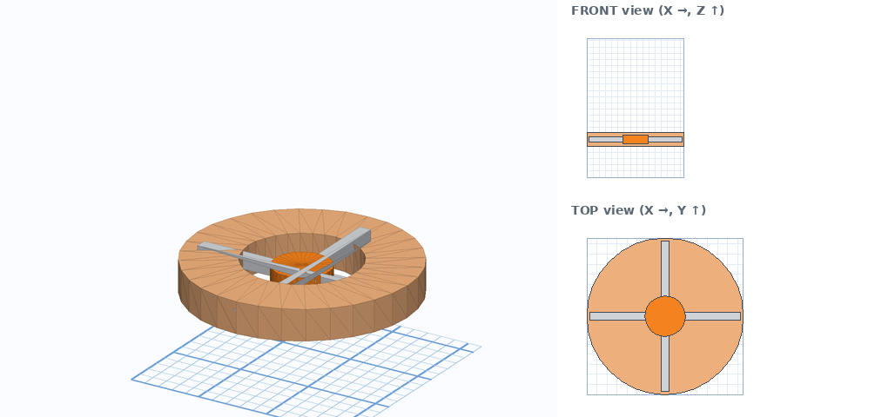
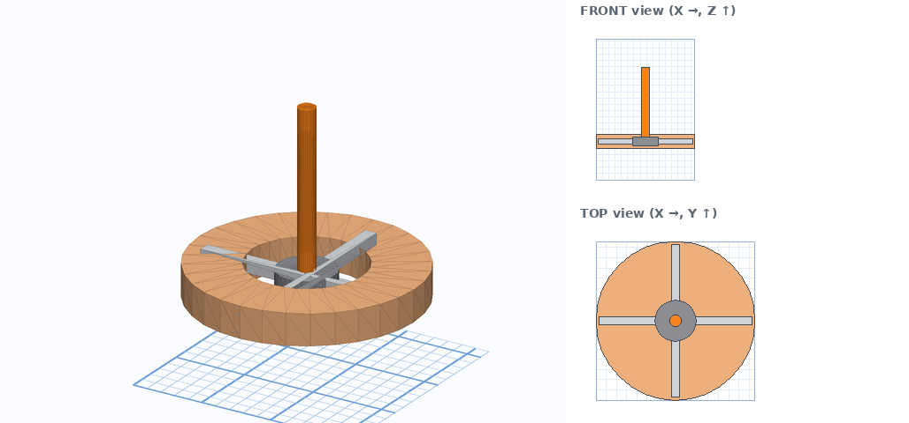
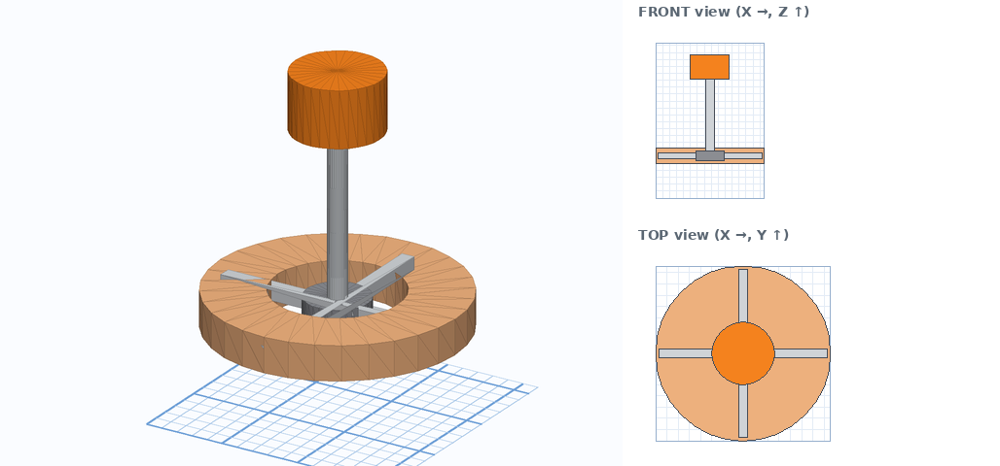
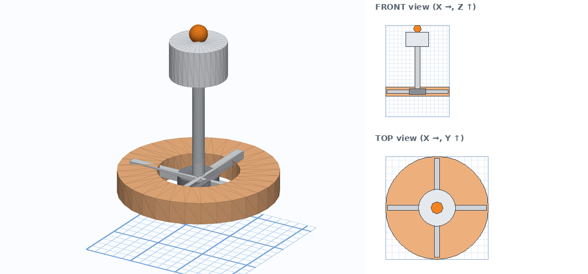
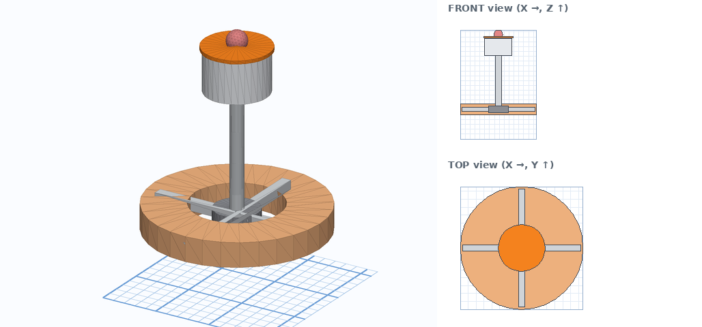
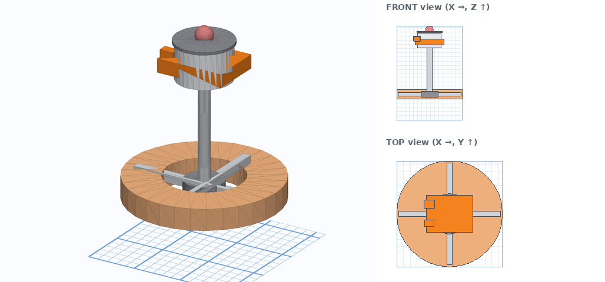
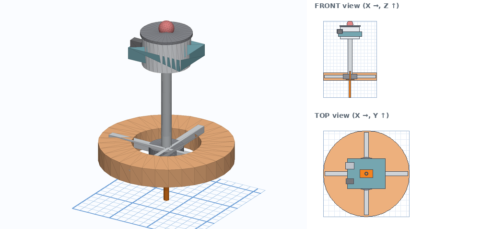
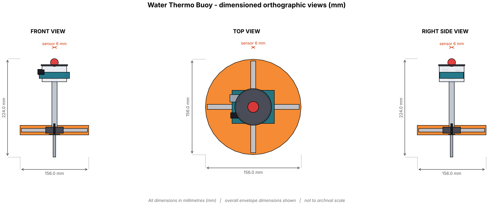

🎬 Watch the tutorial video
The whole build, animated step by step. Press space to pause, drag the bar to rewatch any step. Step numbers match the written guide below.
Tip: use the speed button (⚙) to slow the video to 0.5× while you copy the numbers. Download the video to watch offline.
Before you start
Orange = the part you are making now. Grey = parts you already made.
- Go to tinkercad.com, sign in and click Create → 3D Design.
- Bottom-right of the workplane set Snap grid to 1.0 mm.
- Click the Ruler tool (top of the shapes panel), then click the workplane to place its corner where the front-left corner of your model will be. That corner is X 0, Y 0. X goes to the right, Y goes away from you.
- Every shape table has Ruler X / Y / Z. X and Y are the distances from that corner to the nearest side of the shape. Z is how high the shape's lowest point sits above the workplane (black cone).
- Build the parts in order. Each step adds one orange part to the grey ones.

The steps
Tick each box when you finish a step. If you get stuck press Ctrl+Z and retry that step.
1Float ring
- Drag the shape from the Basic Shapes panel onto the workplane.
- Click it and type Size X, Y, Height (the white squares show the number boxes).
- If a Rotate is listed: click a curved arrow, type the angle. Picture is the judge: if it leans the wrong way type the same angle as a negative.
- Place it: with the Ruler at your corner type the X and Y distances, then click the black cone ▲ and type Z (height of its lowest point).
- Colour it grey so the next orange part stands out.

Orange = this step. Grey = already built. Right: front and top views, 10 mm grid.
| Part | Shape | Size (X × Y × Height) | Rotate | Ruler X / Y / Z | Notes |
|---|---|---|---|---|---|
| Float ring | Tube | 156 × 156 × 22 wall 38 | none | X 0 Y 0 Z 50 | Set Wall thickness in the shape panel. |
2Float spoke ×2
Same routine as every step: drag, size, rotate (if listed), ruler X / Y, black cone Z, colour grey. Use the table below the picture.

Orange = this step. Grey = already built. Right: front and top views, 10 mm grid.
| Part | Shape | Size (X × Y × Height) | Rotate | Ruler X / Y / Z | Notes |
|---|---|---|---|---|---|
| Float spokes A | Box | 150 × 8 × 8 | none | X 3 Y 74 Z 57 | |
| Float spokes B | Box | 8 × 150 × 8 | none | X 74 Y 3 Z 57 |
3Mounting hub
Same routine as every step: drag, size, rotate (if listed), ruler X / Y, black cone Z, colour grey. Use the table below the picture.

Orange = this step. Grey = already built. Right: front and top views, 10 mm grid.
| Part | Shape | Size (X × Y × Height) | Rotate | Ruler X / Y / Z | Notes |
|---|---|---|---|---|---|
| Mounting hub | Cylinder | 40 × 40 × 14 | none | X 58 Y 58 Z 54 | Sides/Steps 32. |
4Mast
Same routine as every step: drag, size, rotate (if listed), ruler X / Y, black cone Z, colour grey. Use the table below the picture.

Orange = this step. Grey = already built. Right: front and top views, 10 mm grid.
| Part | Shape | Size (X × Y × Height) | Rotate | Ruler X / Y / Z | Notes |
|---|---|---|---|---|---|
| Mast | Cylinder | 12 × 12 × 110 | none | X 72 Y 72 Z 68 | Sides/Steps 32. |
5Dry box
Same routine as every step: drag, size, rotate (if listed), ruler X / Y, black cone Z, colour grey. Use the table below the picture.

Orange = this step. Grey = already built. Right: front and top views, 10 mm grid.
| Part | Shape | Size (X × Y × Height) | Rotate | Ruler X / Y / Z | Notes |
|---|---|---|---|---|---|
| Dry box | Cylinder | 56 × 56 × 36 | none | X 50 Y 50 Z 171 | Sides/Steps 32. |
6Beacon
Same routine as every step: drag, size, rotate (if listed), ruler X / Y, black cone Z, colour grey. Use the table below the picture.

Orange = this step. Grey = already built. Right: front and top views, 10 mm grid.
| Part | Shape | Size (X × Y × Height) | Rotate | Ruler X / Y / Z | Notes |
|---|---|---|---|---|---|
| Beacon | Sphere | 18 × 18 × 18 | none | X 69 Y 69 Z 206 | Sides/Steps 32. |
7Solar disc
Same routine as every step: drag, size, rotate (if listed), ruler X / Y, black cone Z, colour grey. Use the table below the picture.

Orange = this step. Grey = already built. Right: front and top views, 10 mm grid.
| Part | Shape | Size (X × Y × Height) | Rotate | Ruler X / Y / Z | Notes |
|---|---|---|---|---|---|
| Solar disc | Cylinder | 60 × 60 × 3 | none | X 48 Y 48 Z 207.5 | Sides/Steps 32. |
8Arduino Uno R3 + breadboard ×3
Same routine as every step: drag, size, rotate (if listed), ruler X / Y, black cone Z, colour grey. Use the table below the picture.

Orange = this step. Grey = already built. Right: front and top views, 10 mm grid.
| Part | Shape | Size (X × Y × Height) | Rotate | Ruler X / Y / Z | Notes |
|---|---|---|---|---|---|
| Arduino Uno board | Box | 69 × 54 × 14 | none | X 43.5 Y 51 Z 179 | |
| Arduino USB port | Box | 16 × 12 × 11 | none | X 40 Y 86 Z 188.5 | |
| Arduino power jack | Box | 14 × 9 × 11 | none | X 41 Y 59.5 Z 187.5 |
9Waterproof temperature probe ×3
Same routine as every step: drag, size, rotate (if listed), ruler X / Y, black cone Z, colour grey. Use the table below the picture.

Orange = this step. Grey = already built. Right: front and top views, 10 mm grid.
| Part | Shape | Size (X × Y × Height) | Rotate | Ruler X / Y / Z | Notes |
|---|---|---|---|---|---|
| Probe adapter PCB | Box | 24 × 14 × 2 | none | X 66 Y 71 Z 50 | |
| Steel probe | Cylinder | 6 × 6 × 50 | Tip 180° (side arrow) | X 75 Y 75 Z 0 | Sides/Steps 32. |
| Probe cable | Cylinder | 4 × 4 × 24 | Tip 180° (side arrow) | X 76 Y 76 Z 52 | Sides/Steps 32. |
10Compare with the teacher's model
- Download DS9_CA4_CHOSEN_WaterThermoBuoy_FINAL.stl.
- In Tinkercad click Import → choose the file → units mm → Import.
- Give the imported model a different colour, select both models and use Align (L) on X, Y and Z with the middle dots.
- Look for anything that sticks out. A difference under about 2 mm is fine. A bigger gap means a number was typed wrongly in that part's step.
11Capture the three views
- Click FRONT on the view cube. If you can right-click the cube, switch on Orthographic. Take a screenshot.
- Click TOP. Screenshot.
- Click RIGHT. Screenshot.
- Paste the three screenshots on one page in Slides or Docs and crop them.

Model answer: front, top and right views with dimensions.
12Add the dimensions
Draw arrows with the line tool and type the sizes. Overall size: 156 × 156 × 224 mm (length × width × height). Then label every part, for example:
| Part | Shape and size (mm) |
|---|---|
| Float ring | Tube 156 × 156 × 22 |
| Float spoke | Box 150 × 8 × 8, Box 8 × 150 × 8 |
| Mounting hub | Cylinder 40 × 40 × 14 |
| Mast | Cylinder 12 × 12 × 110 |
| Dry box | Cylinder 56 × 56 × 36 |
| Beacon | Sphere 18 × 18 × 18 |
| Solar disc | Cylinder 60 × 60 × 3 |
| Arduino Uno R3 + breadboard | Box 69 × 54 × 14, Box 16 × 12 × 11, Box 14 × 9 × 11 |
| Waterproof temperature probe | Box 24 × 14 × 2, Cylinder 6 × 6 × 50, Cylinder 4 × 4 × 24 |
13Save and export
- Rename the design to Water Thermo Buoy – your name.
- Click Export → .STL. This is the file a 3D printer slicer uses.
- For a laser-cut part also export .SVG (a flat outline).
- Upload the STL and your 2D drawing where your teacher tells you.
🧠 Tinkercad skills quiz — Water Thermo Buoy
Only about building in Tinkercad: shapes, sizes, handles, shortcuts, exports. Timed and auto-marked; your score is saved to the class sheet when you are logged in above. Read all four options: they are written to look alike.
🏁 Ready to play?
10 questions · 15 seconds each · explanations after every answer.